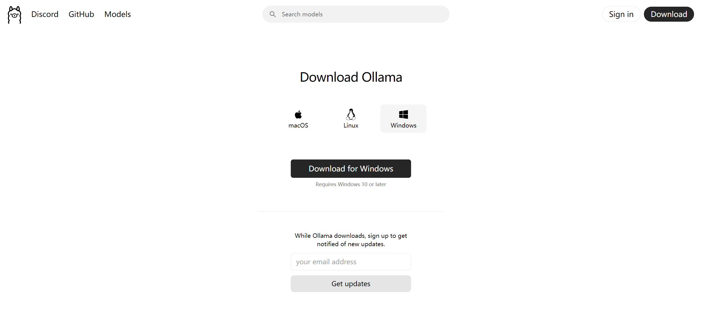
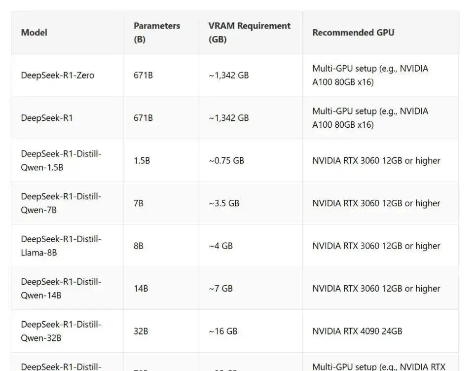
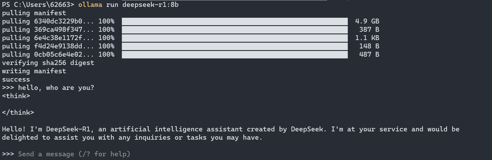
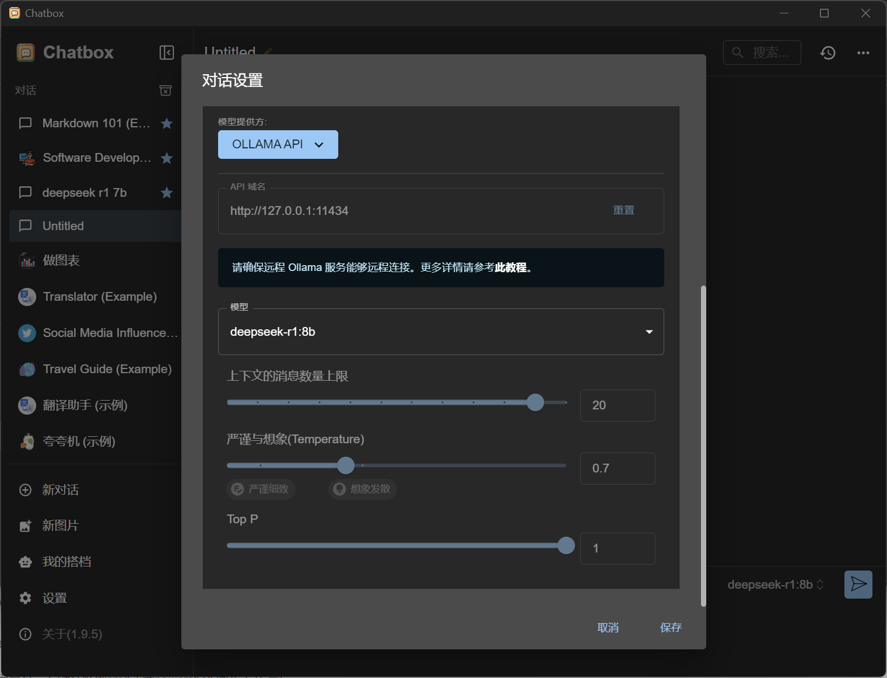
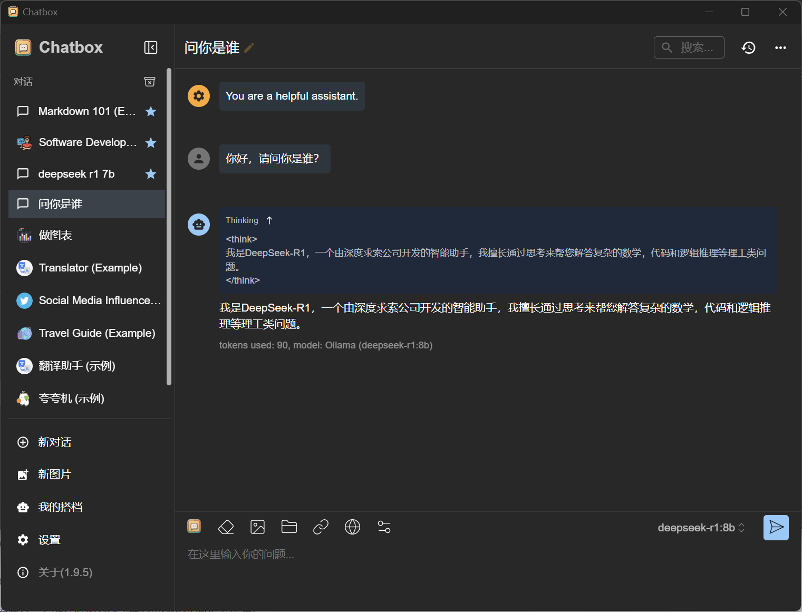

DeepSeek-R1本地部署
前言
蛇年新年好。最近因为过年有很多其他事情需要忙，KongEngine的重构工作也暂停了，文章也有一阵子没有更新。今天是大年初六，总算是回到了深圳家，自己也可以稍微的放松了一下。
今年过年的这段时间，最大的新闻应该就是DeepSeek了。他前几次模型的发布还不显山不漏水的，这次R1推理大模型的发布和开源不仅仅震动了科技圈、AI圈，而是完完全全的出圈了。我在过年的时候也花了很长时间去使用它的应用，它确实展现了很惊艳的效果，但是由于各方面的原因，它的网站确确实实不够稳定，经常会卡住需要重试。于是我就想尝试着本地部署。
Ollama
这次部署我使用的是Ollama。
Ollama简介
Ollama 是一个开源的本地大型语言模型运行框架，旨在简化在本地运行大语言模型的过程，降低使用门槛。它支持 Llama 2、Mistral、Gemma 等众多主流开源模型，能将模型权重、配置和数据捆绑为 Modelfile 进行统一管理。
Ollama 具有自动硬件加速功能，可充分利用系统硬件资源，还支持多操作系统，提供简单的命令行界面和 REST API，拥有丰富的预构建模型库，具备轻量级、可扩展、开源免费等特点，为开发者、研究人员和爱好者在本地进行语言模型的实验、项目开发等提供了便捷且隐私安全的解决方案。
Ollama安装
Ollama的安装十分简单，从官网下载对应操作系统的Ollama版本
，我这里使用的Windows版本。

安装完成后，打开命令行工具，通过使用"ollama run ‘model-name’"来安装/调用模型能力。
DeepSeek安装
为了在Ollama中使用DeepSeek，我们在Ollama的模型页面找到DeepSeek-R1的页面。
DeepSeek-R1有多个版本，处理完整模型671b，还提供了很多个蒸馏模型，从1.5b到-70b。
一般来说家用电脑的硬件是没办法支持部署完整版本的，我们这里选择8b的版本。

在命令行总输入:
1 | ollama run deepseek-r1:8b |
ollama会自动下载对应版本的模型并运行。

使用chatbox
当然我们可以很愉快的在命令行中和DeepSeek交流，但是这样还是太不方便了。如果我们想要开启多个对话，或者更好的去调整模型参数的话，还是可以借助其他工具。这种工具有很多种，这里提供一个例子chatbox。
Chatbox AI是一款 AI 客户端应用和智能助手，支持众多先进的 AI 模型和 API，可在 Windows、MacOS、Android、iOS、Linux 和网页版上使用。
从官网上下载对应系统的安装包安装，后打开chatbox程序。新建一个对话，在对话设置里面选择模型提供方为OLLAMA API，模型选择对应的DeepSeek模型，这样就能在chatbox中和DeepSeek，或者其他模型对话了。


结语
好了，今天这篇文章简单的介绍了如何在自己的机器上搭建一个和DeepSeek对话的能力。除了DeepSeek这个方法还能和其他的很多模型配合使用。
AI的一个新的阶段似乎已经到来，保持探索，enjoy。